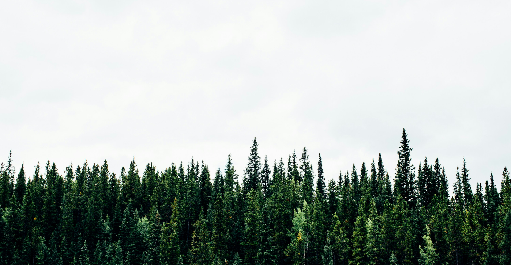

생명의숲
-
생명의숲은
숲을 지키며
건강한 사회를
만들고자 합니다.
-
생명의숲은
거리에 숲을 만들고,
그 숲을 통해
사회문제를 해결합니다.
-
나무를 심고 숲을 가꾸는
생명의숲과 함께
하실분들을 찾습니다.
2023 심은 나무
89,272
그루
주요 활동
- 산불피해지 복원사업
산벚, 소나무 2종 2.5ha - 용인 탄소중립의숲(박곡리)
스트로브잣, 상수리 2종 7,500본, 2.5ha - 울진 산불피해지 복원사업
산벚, 소나무 2종 14,000본, 5ha - 동해 산불피해지 복원사업
산벚, 느티, 상수리 등 4종 20,870본, 3.6ha
